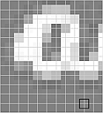

The definition of the bounding box in
Amira
. Different gray shades depict the intensity values defined on the regular grid (white lines). The black square depicts the extent of one voxel. The outer frame depicts the extent of the bounding box.